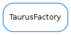

TaurusFactory¶

-
class
TaurusFactory[source]¶ Bases:
objectThe base class for valid Factories in Taurus.
-
DefaultPollingPeriod= 3000¶
-
addAttributeToPolling(attribute, period, unsubscribe_evts=False)[source]¶ Activates the polling (client side) for the given attribute with the given period (seconds).
Parameters: - attribute (:class:~`taurus.core.tango.TangoAttribute`) – attribute name.
- period (:class:~`float`) – polling period (in seconds)
- unsubscribe_evts (:class:~`bool`) – whether or not to unsubscribe from events
-
findObjectClass(string absolute_name) → taurus.core.taurusmodel.TaurusModel subclass[source]¶ Obtain the class object corresponding to the given name.
@param[in] absolute_name the object absolute name string
@return a class object that should be a subclass of a taurus.core.taurusmodel.TaurusModel @throws TaurusException if the given name is invalid.
-
getAttribute(string attr_name) → taurus.core.taurusattribute.TaurusAttribute[source]¶ Obtain the object corresponding to the given attribute name. If the corresponding attribute already exists, the existing instance is returned. Otherwise a new instance is stored and returned.
@param[in] attr_name string attribute name
@return a taurus.core.taurusattribute.TaurusAttribute object @throws TaurusException if the given name is invalid.
-
getConfiguration(param) → taurus.core.taurusconfiguration.TaurusConfiguration[source]¶ Obtain the object corresponding to the given attribute or full name. If the corresponding configuration already exists, the existing instance is returned. Otherwise a new instance is stored and returned.
@param[in] param taurus.core.taurusattribute.TaurusAttribute object or full configuration name
@return a taurus.core.taurusattribute.TaurusAttribute object @throws TaurusException if the given name is invalid.
-
getDatabase(string db_name) → taurus.core.taurusdatabase.TaurusDatabase[source]¶ Obtain the object corresponding to the given database name or the default database if db_name is None. If the corresponding database object already exists, the existing instance is returned. Otherwise a new instance is stored and returned.
- @param[in] db_name database name string. It should be formed like:
- <scheme>://<authority>. If <scheme> is ommited then it will use the default scheme. if db_name is None, the default database is used
@return a taurus.core.taurusdatabase.TaurusDatabase object @throws TaurusException if the given name is invalid.
-
getDevice(string dev_name) → taurus.core.taurusdevice.TaurusDevice[source]¶ Obtain the object corresponding to the given device name. If the corresponding device already exists, the existing instance is returned. Otherwise a new instance is stored and returned.
- @param[in] dev_name the device name string. It should be formed like:
- <scheme>://<authority>/<device name>. If <scheme> is ommited then it will use the default scheme. If authority is ommited then it will use the default authority for the scheme.
@return a taurus.core.taurusdevice.TaurusDevice object @throws TaurusException if the given name is invalid.
-
getSerializationMode()[source]¶ Gives the serialization operation mode.
Return type: :class:~`TaurusSerializationMode` Returns: the current serialization mode
-
isPollingEnabled()[source]¶ Tells if the local tango polling is enabled
Return type: :class:~`bool` Returns: wheter or not the polling is enabled
-
removeAttributeFromPolling(attribute)[source]¶ Deactivate the polling (client side) for the given attribute. If the polling of the attribute was not previously enabled, nothing happens.
Parameters: attribute (:class:~`str`) – attribute name.
-
schemes= ()¶
-